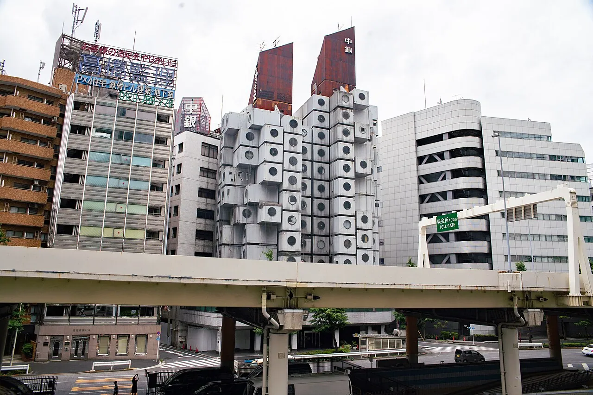

1/8 · Exterior · The Nakagin Capsule TowerPhoto: Jordy Meow · CC BY-SA 3.0 · source

2/8 · ExteriorPhoto: Dick Thomas Johnson from Tokyo, Japan · CC BY 2.0 · source3/8 · ExteriorPhoto: Dick Thomas Johnson from Tokyo, Japan · CC BY 2.0 · source4/8 · ExteriorPhoto: Dick Thomas Johnson from Tokyo, Japan · CC BY 2.0 · source5/8 · DetailPhoto: Dick Thomas Johnson from Tokyo, Japan · CC BY 2.0 · source6/8 · DetailPhoto: Dick Thomas Johnson from Tokyo, Japan · CC BY 2.0 · source7/8 · ContextPhoto: Dick Thomas Johnson from Tokyo, Japan · CC BY 2.0 · source
The Nakagin Capsule Tower Building was a mixed-use residential and office tower in the upscale Ginza district of Tokyo, Japan, designed by the architect Kisho Kurokawa. Completed in two years (1970–1972), the building was a rare remaining example of Japanese Metabolism, an architectural movement emblematic of Japan's postwar cultural resurgence. It was the world's first example of capsule architecture.
In time, however, the Capsule Tower fell into disrepair. Attempts to raise funds to save the Tower and campaigns to preserve it as a historic landmark were unsuccessful. The building was demolished in 2022, although 23 component units were earmarked for preservation and later repurposed elsewhere.